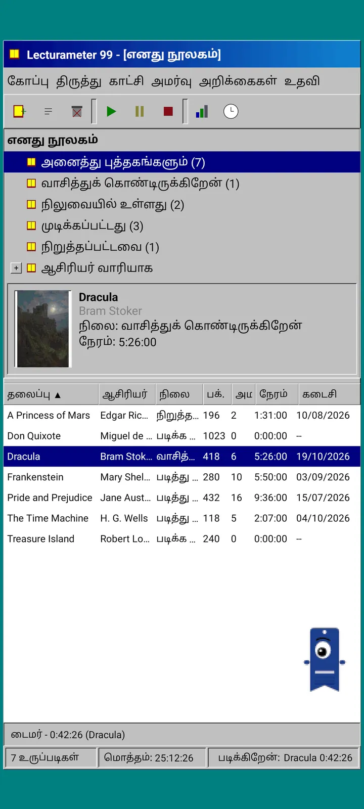
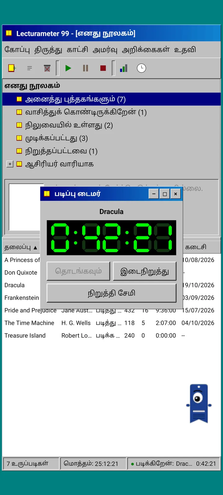
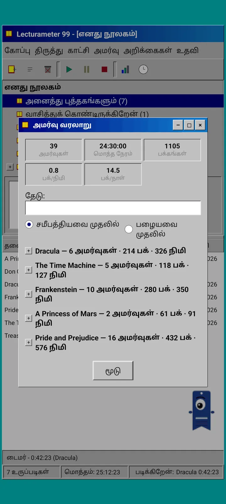
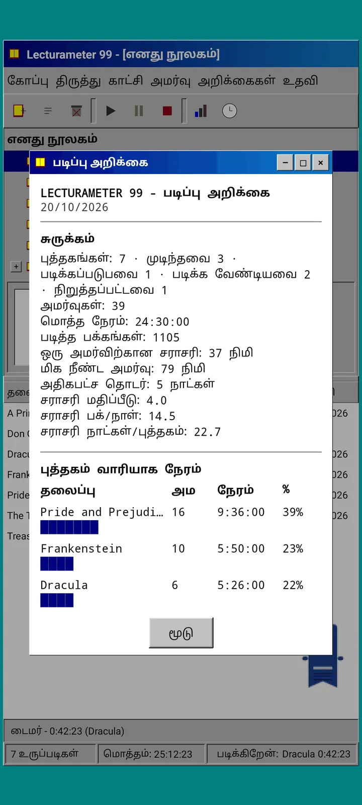

வலைப்பதிவு · 2026-09-24
Lecturameter 1999: Lecturameter ஒரு பழைய கணினி நிரலாக இருந்தால் எப்படி இருக்கும்?
சாளரங்கள், பட்டிகள், அட்டவணைகள் மற்றும் LCD நேரங்காட்டியுடன், உங்கள் உண்மையான காப்புப்பிரதிகளைத் திறக்கும் மாற்று Lecturameter கிளையன்ட். இது எப்படி உருவானது, இதில் என்ன உள்ளது, வேண்டுமென்றே எதை விட்டுவிட்டது. Play Store மற்றும் App Store-இல் இலவசமாக வருகிறது.
Lecturameter 1999 சில மாதங்களாக உருவாகி வருகிறது. அவசரமின்றி, திட்டமின்றி, அங்கங்கே துண்டுதுண்டாக இதை உருவாக்கினேன். iOS பதிப்பு நான் எதிர்பார்த்ததை விட எளிமையாக இருந்து, இதை முடிக்க எனக்கு இடம் தந்ததைப் பார்த்த பிறகுதான் இதில் தீவிரமானேன்.
இது ஒரே சோதனை அல்ல. Lecturameter உலகின் வேறு திட்டங்களும் என் மனதில் உள்ளன, சில நன்கு முன்னேறியவை, சில தொடங்கப்பட்டவை மட்டுமே. அவற்றில் பெரும்பாலானவை ஒருபோதும் வெளிச்சத்தைக் காணாமல் போகலாம்.
இது எங்கிருந்து வந்தது?
நான் சிறிது காலமாகச் சுற்றிக்கொண்டிருந்த ஒரு சோதனையிலிருந்து எல்லாம் தொடங்கியது.
Lecturameter-ஐ முற்றிலும் வேறுபட்ட வடிவமைப்பு அடிப்படைகளின் கீழ், பலமுறை, ஆரம்பத்திலிருந்து மீண்டும் உருவாக்குவதே யோசனை. உண்மையான செயலியைத் தொடாமல், அதை மாற்றும் எண்ணமும் இல்லாமல். ஏழு பதிப்புகள் வந்தன. ஒன்று 2016-ஆம் ஆண்டின் Android செயலியைப் பின்பற்றியது, மற்றொன்று 2036-இல் எப்படி இருக்கும் என்று கற்பனை செய்தது, இன்னொன்று நூலகத்தை, படிக்கப் படிக்கத் தடிமனாகும் முதுகுப் பகுதிகளுடைய புத்தக அலமாரியாக மாற்றியது, இன்னொன்று இரண்டு திரைகள் கொண்ட கையடக்க கன்சோலுக்காக வடிவமைக்கப்பட்டது.
எனக்கு மிகவும் பிடித்தது 1999 பதிப்பு. தொண்ணூறுகளின் பிற்பகுதியின் ஒரு டெஸ்க்டாப் நிரல்: அடர்த்தியானது, பயன்பாட்டுக்கானது, எல்லாமே சாளரங்கள், பட்டிகள் மற்றும் அட்டவணைகளில். இதை ஒரு வேடிக்கையான பயிற்சியாகச் சிறிது சிறிதாக முடித்து, அடியில் உண்மையான Lecturameter தரவுடன் முழுமையான கிளையன்டாக மாற்றுவது என்று முடிவு செய்தேன்.
இது என்ன?
Lecturameter 1999 என்பது Lecturameter-இலிருந்து தனியான, சுயாதீனமான செயலி. இதைத் திறந்தால் நீலப்பச்சை நிற டெஸ்க்டாப்பின் மேல் பெரிதாக்கப்பட்ட ஒரே சாளரம் தெரியும். மேலே தலைப்புப் பட்டையும் பட்டிகளும் உள்ளன: கோப்பு, திருத்து, காண், அமர்வு, அறிக்கைகள் மற்றும் உதவி. அதன் கீழே பிக்சல் ஐகான்களுடன் கருவிப்பட்டை. நடுப்பகுதி இரண்டாகப் பிரிக்கப்பட்டுள்ளது: நூலக மரமும் அட்டையுடன் முன்னோட்டப் பலகமும், ஒவ்வொரு புத்தகத்திற்கும் ஒரு வரிசை கொண்ட அட்டவணையும். அடியில் நிலைப்பட்டையில் உருப்படிகளின் எண்ணிக்கை, மொத்த நேரம் மற்றும் நீங்கள் படிக்கும் புத்தகம் இருக்கும்.



Lecturameter-இன் அதே தரவு
இந்தச் சோதனையைப் பயன்படுத்தக்கூடிய ஒன்றாக மாற்றுவது இந்தப் பகுதிதான். 1999 தோற்றத்தின் கீழே, உண்மையான Lecturameter தரவு மாதிரி அப்படியே நகலெடுக்கப்பட்டு உள்ளது: அதே புத்தகங்கள், அதே அமர்வுகள், அதே நிலைகள், மதிப்பீடுகள் மற்றும் குறிப்புகள். இது ஏற்றுமதி செய்யும் காப்புப்பிரதி Lecturameter ஏற்றுமதி செய்யும் அதே கோப்புதான், இது இறக்குமதி செய்வதும் அதுவே.
நடைமுறையில் இதன் பொருள், நீங்கள் கோப்புக்குச் சென்று உங்கள் காப்புப்பிரதியை இறக்குமதி செய்து உங்கள் முழு நூலகத்தையும் 1999 அட்டவணையில் பார்க்கலாம். LCD நேரங்காட்டியுடன் ஒரு வாரம் படியுங்கள். ஏற்றுமதி செய்யுங்கள். புதிய அமர்வுகளுடன் நவீன செயலிக்குத் திரும்புங்கள், வழியில் ஒரு புலத்தையும் இழக்காமல். Goodreads CSV-யும் உள்ளேயும் வெளியேயும் செல்லும்.
புத்தகத் தேடல் Lecturameter-இல் உள்ளது போலவே: செயலியின் சொந்தப் பட்டியலையும் Google Books-ஐயும் கேட்டு, தலைப்பு, ஆசிரியர், பக்கங்கள், ISBN மற்றும் அட்டையை நிரப்புகிறது. அட்டை போஸ்டர் வடிவில் மாற்றப்பட்டு, மென்மையாக்கல் இல்லாமல் வரையப்படுவதால், அந்தக் காலத்து GIF போலத் தெரிகிறது.
அமர்வுகள், வரலாறு மற்றும் அறிக்கை
வாசிப்பு ஓட்டம் Lecturameter-இல் உள்ளதுதான், சாளரங்களாக மொழிபெயர்க்கப்பட்டது. அட்டவணையில் ஒரு புத்தகத்தைத் தேர்ந்தெடுத்து இயக்கு பொத்தானை அழுத்துகிறீர்கள். நேரங்காட்டிச் சாளரம் திறக்கும், கருப்பின் மேல் பச்சை நிற ஏழு-பிரிவு காட்சியுடன். அதை நகர்த்தலாம், பணிப்பட்டிக்குச் சிறிதாக்கலாம் அல்லது மூடலாம்: நேரம் நிலைப்பட்டையில் தொடர்ந்து எண்ணப்படும்.
நிறுத்து அழுத்தினால், அமர்வைச் சேமிக்கும் உரையாடல் திறக்கும்: தேதி, நிமிடங்கள், முதல் மற்றும் கடைசிப் பக்கம், கருத்து. நீங்கள் தட்டச்சு செய்யும்போதே சுருக்கம் பக்கங்களையும் வேகத்தையும் கணக்கிடுகிறது. புத்தகத்தின் கடைசிப் பக்கத்தை அடைந்தால், அதை முடித்தீர்களா என்று கேட்கும். கைமுறை அமர்வுகள் அமர்வு பட்டியிலிருந்து சேர்க்கப்படும்.
வரலாறு அமர்வுகளைப் புத்தகவாரியாக, கூட்டல் மற்றும் கழித்தல் குறிகளுடன் ஒரு மரத்தில் தொகுக்கிறது, மேலே ஐந்து புள்ளிவிவரங்களுடன்: அமர்வுகள், மொத்த நேரம், பக்கங்கள், நிமிடத்திற்குப் பக்கங்கள் மற்றும் நாளுக்குப் பக்கங்கள். ஒரு அமர்வைத் திருத்த இருமுறை தட்டுங்கள், நீக்க நீண்ட நேரம் அழுத்துங்கள்.
புள்ளிவிவரங்கள் என்பவை சம அகல எழுத்துகளில் ஒரு வாசிப்பு அறிக்கை, அச்சுப்பொறியிலிருந்து வந்தது போல: நீண்ட தொடர்ச்சியும் சராசரி மதிப்பீடும் கொண்ட சுருக்கம், தொகுதிக் கோடுகளுடன் ஒவ்வொரு புத்தகத்திற்கான நேரம், நாளுக்குப் பக்கங்களில் வேகம், ஒவ்வொரு நாளும் படித்த பக்கங்களுக்கு ஏற்ப எழுத்துகளால் வரையப்பட்ட ஆண்டின் நாட்காட்டி, மற்றும் கடைசி ஏழு நாட்கள்.



Pagi 99
Pagi-யும் 1999-க்குப் பயணம் செய்கிறது. அதே ஒற்றைக் கண் புத்தகக்குறி நிழல்படம், ஆனால் பிக்சல் வடிவில், அந்தக் காலத்து அலுவலக உதவியாளர்களைப் போலத் திரையில் சுதந்திரமாகச் சுற்றித் திரிகிறது. விரலால் இழுக்கலாம், தட்டினால் ஒரு குறுகிய வரி சொல்லும், நீங்கள் செய்வதைப் பொறுத்து முகபாவம் மாறும்: புத்தகத்தைத் தேடும்போது யோசிக்கும், நேரங்காட்டி ஓடும்போது படிக்கும், அமர்வைச் சேமிக்கும்போது அல்லது புத்தகத்தை முடிக்கும்போது கொண்டாடும்.
செயலியின் குறிப்புகள் Pagi-உடன் இணைந்த மஞ்சள் நிற குமிழிகளில், ஒவ்வொன்றும் ஒருமுறை மட்டும் தோன்றும். அவற்றை மீண்டும் பார்க்க விரும்பினால், உதவி பட்டியின் கீழ் இன்றைய குறிப்பில் உள்ளன.



எது இல்லை
Lecturameter 1999 வேண்டுமென்றே எளிமையானது. இது ஒரு சோதனை, கொள்கையளவில் வெளியீட்டுக்குப் பிறகு இதற்கு மேலும் மேம்பாடு இருக்காது. புதிய வசதிகள் தொடர்ந்து Lecturameter-க்கே வரும்.
இதை உருவாக்கும்போது, வாசிப்பு ஓட்டத்தைப் பாதிக்காத எதுவும் வேண்டாம் என்று முடிவு செய்தேன். அதனால்தான் Lecturameter 1999-இல் Pro இல்லை. நீங்கள் பார்ப்பதுதான் உங்களுக்குக் கிடைப்பது.
Lecturameter 1999, Lecturameter ஆதரிக்கும் எல்லா மொழிகளிலும் வெளிவரும்.
எப்போது?
iOS-க்கான Lecturameter மற்றும் பதிப்பு 3.7 வெளிவந்த பிறகு, இது Play Store மற்றும் App Store-இல் இலவசமாக வரும். இது முடிந்து என் தொலைபேசியில் ஓடிக்கொண்டிருக்கிறது. வெளியிடுவதற்கு முன் என் உண்மையான நூலகத்துடன் சோதனையும் கடைசி விவரங்களும் மீதம் உள்ளன. கிடைக்கும்போது இங்கே, X-இல் மற்றும் Reddit-இல் அறிவிப்பேன்.
அதுவரை, Lecturameter இன்னும் Lecturameter தான், அதன் தீம்கள், சவால்கள் மற்றும் Bingo உடன். 1999 பதிப்பு அதே தரவைப் பார்ப்பதற்கான இன்னொரு வழி.
காத்திருக்கும் வேளையில், Android-இல் Lecturameter
தொடர்ந்து படியுங்கள்: Lecturameter 1999 · வாசிப்பு நேரமா பக்கங்களா · வாசிப்பு நேரங்காட்டி